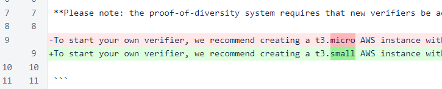
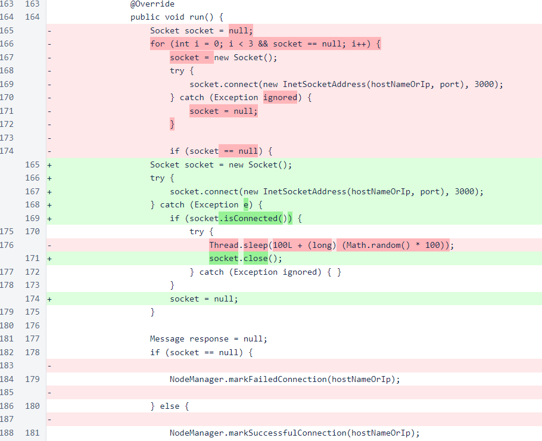
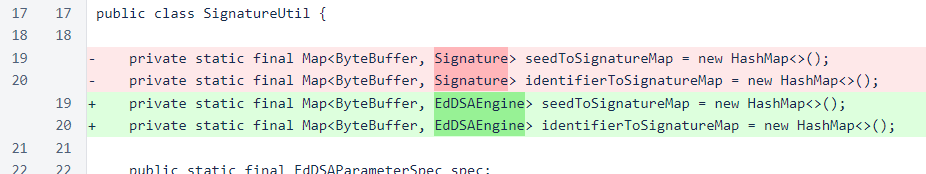
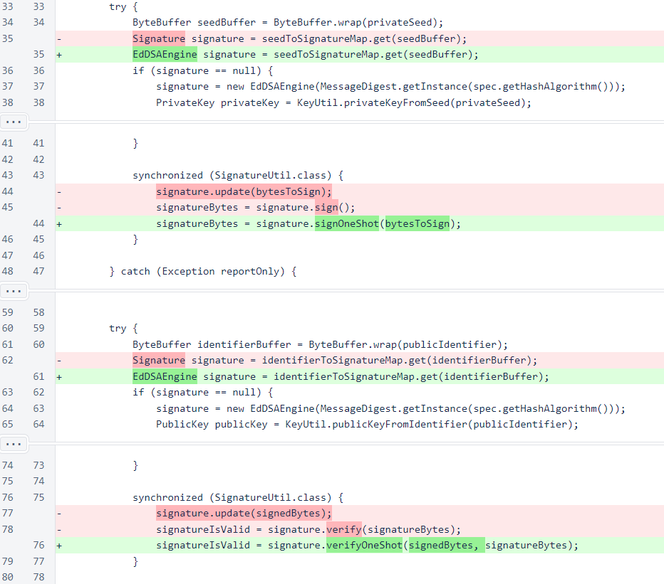

Nyzo version 503 (commit on GitHub) improves handling of signatures.
This version affects both the verifier and the sentinel, as every message in Nyzo is signed.
A member of the community, reviewing the Nyzo code, found an issue with signature handling in the SignatureUtil class. While this issue is small in terms of the number of lines of code affected, it introduced a number of potential stability issues and opportunities for attack due to the frequency of use of this code path in Nyzo.
The fix for this issue, suggested by the same member of the community who found the problem, is a simple, drop-in solution that requires no structural changes in logic. It directly improves the performance of the involved code, and it also drastically improves overall stability of the verifier and sentinel.
The first change in this version is a modification of the recommended instance in the README file. If you are using AWS, our base recommendation is now a t3.small to cope with the demands of the current cycle size. If you are planning to use other cloud hosting providers, we recommend asking other members of the community for advice on those providers, as the simple specifications listed on a provider's website are often not sufficient for predicting whether a particular instance will be sufficient for running a successful Nyzo verifier.
In the Message class, the number of connection attempts has been reduced from three to one for each outgoing message. In a smaller cycle, the additional attempts would slightly improve success rate of individual messages. In a larger cycle, the additional attempts increase network traffic and increase the likelihood of triggering denial-of-service protections.
The the SignatureUtil class, the maps for storing signatures have been changed from the Signature superclass to the EdDSAEngine subclass to improve readability of the changes in signature handling.
When signing or verifying signatures, the signOneShot and verifyOneShot methods are now used. These methods, specific to the EdDSAEngine subclass, eliminate the memory copies and buffer resizes of the previously used methods. The buffer resizes were an important potential vulnerability, as verifying a 1MB message would cause the signature's buffer to be expanded to accommodate 1MB of data. The buffer would not be reduced in size for the life of the signature object. As a large number of signatures are stored in the map to reduce the overhead of repeated signature creation, this can easily become a sizable memory liability.
For finding the signing issue and a solution for it, ∩225,000 was awarded to 44a8...a3da. (transaction 1: ∩100,000, transaction 2: ∩50,000, transaction 3: ∩25,000, transaction 4: ∩50,000)